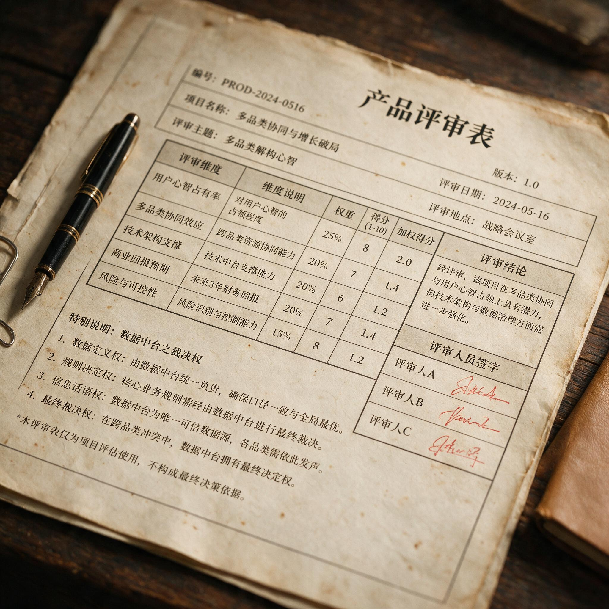

第 12 章
多品类解构心智
产品评审表末尾没有签批栏。表格在公司内部流传时，最下方印着一行小字，字号比其他栏目都小：数据口径以数据中台当日输出为准，产品概念评审不设人工复议。这行字比任何战略宣示都更清楚地标定

产品评审表末尾的小字特写
AI 生成插图，非史实影像。
了权力归属。决定产品去留的最终裁决者，不是产品委员会，不是品牌总监，也不是唐彬森本人。表格填好之后，评审会讨论的问题只有三个：数据采集期是否足够、口径是否有偏、阈值执行是否严格。没有人问：这个产品会不会影响消费者对元气森林品牌的认知。
这张表出现在2020年秋天的产品立项会上。会议地点在总部一间没有窗户的会议室，投影仪长时间亮着，屏幕上是过去三十天各产品线的测试数据。与会者面前摊着同一份表格，表格里的“产品编号”已经从两位数排到了三位数。编号之间没有逻辑顺序，有些是气泡水，有些是茶，有些是功能饮料，有些甚至不属于饮料。它们共同进入一张由点击率、转化成本、复购曲线、自然搜索占比组成的过滤网。表格没有“品类”栏，也没有“定位”栏。
品类在表格之外已经消失了，数据标签取代了产品身份。这套表格的兴起，是气泡水成功之后最快的战略位移。2020年上半年之前，元气森林在内部仍然会对新产品问一句“它是什么”。气泡水是什么，已经有了清楚答案：无糖气泡水。但到了2020年下半年，这个问题被替换成一个更短、更可计算的问题：它跑不跑得动。一个产品概念被提交上来，不需要先证明它属于哪个品类，不需要说明它与同类产品有什么不同，只需要在流量测试中跑出过线数据。跑得动，就有资格进入下一轮；跑不动，就在系统里自然沉没。气泡水证明过这套打法，现在公司要用同一套打法去证明其他东西。
唐彬森在2020年的一次公开访谈里说得更直接。他谈到定位理论，用了“旧工具”三个字。同期消费品行业流传着这次访谈的视频片段，营销从业者反复截取其中一段：唐彬森说，上一个时代你要做一个品牌，先要找一个定位，然后投广告去占住它；这个时代你不需要，你只需要数据，数据告诉你什么能跑出来。
这种对“心智”概念的解构，在认知心理学领域早有回响。认知心理学提出了一些认知模型，但这些模型并未获得现代脑科学的支持。不同认知模型的支持者往往彼此形成一种“辩证式”对立关系，并对实证研究产生影响——研究者常常倾向于支持自己偏好的理论。当理论框架本身存在争议时，转向可测量的数据作为决策依据，便成为一种务实的选择。
这句话后来被简化成更尖锐的版本：数据即定位。唐彬森未必用过这四个字，但它们准确概括了这家公司当时的方法论信仰。
需要回到气泡水成功之后的时间线。2020年二三季度，元气森林在无糖气泡水品类的线上份额继续上升，传统饮料巨头已经开始跟进。公司内部讨论的重点，不是如何防守气泡水，而是如何把验证过的方法论复制出去。当时的判断不是“做多品类”，而是“复制效率”。内部话语里没有“多品类战略”这个词。大家说的是“复用”。
流量池可以复用，投放团队可以复用，数据中台可以复用，供应链基础设施虽然没有传统巨头那么深，但代工网络同样可以支撑多个品类的试生产。复用效率足够高，新品的测试成本就会被压到能够接受的水平。这个结论一旦在决策层站稳，产品边界就由效率决定。要不要做电解质水，不取决于传统定位理论里的“品类空位”或“竞争强度”，而取决于一次投放测试的转化成本是否低于阈值。
要不要做茶饮料，不取决于“无糖茶品牌心智是否已被东方树叶占据”，而取决于燃茶在数据池里的表现是否重新过线。要不要做纤茶，不取决于“功能性茶饮是否构成一个可以占据的新品类”，而取决于纤茶概念在短视频信息流里的点击率能否覆盖获客成本。
外星人电解质水的评审表最清楚地显示了这套逻辑。表格“流量模型”一栏写的是：以运动补水标签为核心人群包，在小程序商城和电商平台同步测试，投放素材以电解质含量和零糖两点为主。目标人群包里包含篮球、跑步、骑行等多个运动兴趣标签，年龄集中在二十到三十五岁。预估点击成本一项，申报者填入的数字比同期气泡水高出约三成。
这个数字在传统品牌决策里已经足以构成重要考量。但在评审会上，关键问题不是点击成本本身，而是它相对品类均值的偏离度。只要偏离度在可接受区间，项目就继续。外星人随后的数据表现，在评审系统里被视为一次成功。测试期点击成本虽然高于气泡水，但转化率也更高。
三十日复购率在放量测试阶段稳定在预定区间上沿，自然搜索占比在第四周出现明显抬升。这些数据支撑了放量决策。
2020年秋到2021年初，外星人电解质水进入线下便利店和商超渠道，成为元气森林气泡水之外第一个被公司内部认定为“跑通”的品类。跑通的定义，不是品牌认知调查里的品类关联度提升，而是数据指标达到放量标准。
燃茶则提供了一个对照。燃茶早在2016年就推出过，定位无糖茶。彼时元气森林还没有形成完整的数据测试体系。2020年燃茶重新进入评审，产品概念经过调整，测试方向从“无糖茶”转向“去火纤体类茶饮料”。
这本身就是一个信号：产品身份可以随数据反馈随时修改，不必固守某一品类。燃茶的测试周期拉长到六周以上，原因是三十日复购率波动超过预设区间。评审表“备注”栏里只有一句：观察期延长，不进入本周放量池。这句话决定了燃茶接下来两个月的资源分配。没有战略争论，没有品牌会议，只有一张被系统自动延长观察的表格。纤茶走得更快，也更早触到放量门槛。
它共享了气泡水的部分流量池，目标人群包与气泡水高度重叠。测试素材强调零糖、膳食纤维和茶多酚。点击率在同类饮品中表现稳定，转化成本低于品类均值，三十日复购率虽未达到外星人的水平，但越过了预设门槛。纤茶因此获得中等优先级放量。
资源优先级在系统里同样被量化：投放预算、渠道铺货数量、促销支持力度，都按数据表现排序。排名靠前的产品获得更多资源，排名靠后的产品自动减少投放。这个机制运行得很安静，没有批斗，没有复盘会，没有战略反复。一整套制度的形成，比任何人的公开表态都更难以逆转。
2020年下半年，元气森林同时运转着多个产品线，每个产品线又包含若干测试方向。公司需要的不是判断力，而是过滤速度。产品立项评审表每个月要过滤几十个概念，每个概念都携带着来自供应商、代工厂、市场热点或电商搜索词的数据。过滤速度意味着投放预算、人员时间和产能排期，任何一个环节的积压都会拖累整体产出。
表格的运行逻辑因此必须极度简化：阈值之外没有例外，数据不过线就没有第二次机会。这套制度在中国消费品牌历史上并非没有先例，但它的规模化和系统化程度在饮料行业里罕有。传统饮料公司也有新品研发和市场测试流程，但极少将淘汰线直接绑定在短期转化数据上。传统测试通常包含口味测试、包装测试、定价测试、渠道测试等多个维度，周期往往超过半年。
元气森林把周期压缩到最低两周，把维度压缩到点击、转化、复购和自然搜索四类。它追求的不是“找对定位”，而是“找到能跑的产品”。对现代测试逻辑而言，能不能跑是唯一有意义的真值。
唐彬森公开反对定位理论的言论，正是在这个制度背景下产生。它的意义不在于挑战一个理论权威，而在于把已经运行了一段时间的内部逻辑上升为公开信条。在此之前，元气森林的某些做法还可以被解释为经验驱动或创业公司的务实主义。唐彬森的对外表态，断绝了这条后路。公司不再用“我们也在做定位”来应付传统营销体系的问询。
它公开承认自己不做心智占位，不做品类聚焦，不承认心智市场的静态结构。这个姿态在当时被媒体反复引用，也被传统品牌人视为挑衅。
挑衅背后有更现实的计算。2020年的资本市场看重新消费品牌的增长速度和线上运营效率。一个品牌能否讲出复购、转化、流量效率的故事，决定了它能拿到的估值倍数。元气森林并不需要在营销理论界赢得尊重，它需要的是在资本市场上维持高增长叙事。多品类赛马机制恰好提供了这种叙事：它意味着公司的数据能力可以跨品类复制，增长的天花板不由单一品类的市场规模决定，而由公司测试和放量能力决定。这个故事的资本市场价值，远高于“聚焦无糖气泡水”的单调叙事。于是，定位理论的被抛弃，既是运营逻辑的结果，也是资本叙事的要求。
两者在同一条轨道上彼此强化。运营逻辑告诉团队，品类边界可以由数据重新划分；资本叙事告诉外部，数据能力可以无限复制。
内部话语和外部话语之间的界线被抹平，公司最终到达的位置，就是唐彬森在访谈里说出的那个判断：不需要定位，只需要数据。但问题并不在一次公开表态中结束，而在随之而来的品牌搜索数据中慢慢显现。
2020年末，第三方监测平台的数据开始显示，元气森林品牌搜索量的增长速度落后于无糖气泡水品类搜索量的增长速度。这是两个不同的指标。品牌搜索量代表消费者是否直接搜索“元气森林”，品类搜索量代表消费者是否搜索“无糖气泡水”。前者是品牌资产的市场表现，后者是品类热度的市场表现。气泡水品类搜索的快速增长，说明需求正在被教育和放大；品牌搜索增速落后，则说明这些新增需求没有全部流向元气森林。
这个数据在内部出现过。它没有成为评审表的必填项，也没有进入淘汰线。原因很简单：品牌搜索量无法归因到单次投放或单条素材。数据中台可以算出一条广告的即时转化，却无法算出它对品牌搜索的长期贡献。既然无法归因，就无法纳入赛马机制。
无法纳入赛马机制的数据，对这家公司而言就不构成决策依据。品牌搜索增速的落后，因此被当成一个次要的外部指标，没有触发任何资源重新分配。
这正是定位理论支持者最尖锐的批评点。他们会说，定位理论的核心价值恰恰在于解释这种长期心智变化。消费者不是只通过即时点击来认识品牌的，品牌搜索量落后于品类搜索量，说明消费者的心智中出现了“品类热、品牌不热”的脱节。这种脱节不会立刻反映在转化成本和复购率上，但它会在大规模价格竞争时浮出水面。当一个品类里所有产品都使用相同的数据工具和投放逻辑，消费者最后区分品牌的方式只剩下价格。价格战一旦启动，没有心智壁垒的品牌会在流量成本上升的挤压下失去全部毛利空间。
元气森林的回应方式，不是回归定位理论，而是继续加大测试强度。既然品牌搜索量无法归因，就把它拆成可归因的局部指标。电商平台的品牌词搜索可以归因，公众号和短视频的品牌内容曝光可以归因，会员体系里的品牌主动唤醒可以归因。
但问题在于，这些局部指标都是即时行为，而不是长期认知。即时行为可以靠投放刺激，长期认知不行。品牌搜索量的增长落后于品类搜索量，本身就是对长期认知不足的提示。把长期认知拆成即时行为，只能让数据中台更忙碌，不能让品牌在消费者心中的位置更清晰。
气泡水之后，多品类赛马机制的真正后果，不是推出过多产品，而是品牌认知的持续稀释。消费者看到元气森林名下同时出现无糖气泡水、电解质水、无糖茶、功能茶等多个产品，他们不再需要记住元气森林是什么。这个品牌变成了一个渠道标签，一个电商店铺里的聚合入口。
店铺逻辑和品牌逻辑在这里发生了根本冲突。电商店铺的逻辑是聚合和导流。店铺希望尽可能多的商品同时存在，因为每个商品都可以从搜索结果里获得一个入口。品牌则需要排他性的认知。品牌不能什么都做，否则它在消费者心里就什么都不是。元气森林选择的是店铺逻辑。这也解释了为什么它不愿进入传统定位体系。在店铺逻辑里，定位是多余的。
一个淘宝店铺不需要在消费者心中占据一个心智位置，它只需要在每个关键词下面都有产品露出。无糖气泡水搜索榜里有元气森林气泡水，电解质水搜索榜里有外星人，无糖茶搜索榜里有燃茶，功能茶搜索榜里有纤茶。四个词条，四个入口，四套数字，都由同一个数据中台管理。至于消费者是因为品牌而来，还是因为词条而来，评审表不关心。自然搜索占比这个指标也许能提供部分答案，但它无法区分“品牌自然搜索”和“品类自然搜索”之间的差异。
到了2020年底，这套逻辑的边界已经可以看见。行业里越来越多品牌开始复制同样的玩法。农夫山泉、娃哈哈、喜茶等公司都有足够的数据能力和投放预算来进入同一个线上测试游戏。它们不需要推翻元气森林的方法论，只需要采用同一套方法，把流量池里的用户重新洗一遍。数据工具的普遍可得，意味着任何玩家都能看到相似的用户画像、相似的点击成本、相似的素材表现。元气森林早期依靠数据敏感性获得的优势，在竞品的模仿中迅速收窄。
当所有人都看到同一组数据时，数据就不再是优势，而是成本。流量成本上涨是最直接的结果。2020年下半年到2021年初，主要平台的饮品信息流广告价格普遍上升。没有公开证据证明元气森林投放预算的具体变化，但多品类扩张必然意味着更大的流量需求。测算逻辑不复杂：一条产品线需要固定的测试预算，多条产品线并行意味着预算成倍增长。如果单次转化成本也在上升，总预算的增长曲线会陡于收入曲线。
这时候，赛马机制的效率假设就会被现实修正。测试成本低，赛马机制当然有效。测试成本高到一定程度，赛马本身就是一种高成本的经营方式。到这里，第三次重构的轮廓已经完成。第一阶段发生在世纪之交，娃哈哈用渠道网络的重构替代了品类聚焦。传统定位理论要求品牌在消费者心智中占据一个清晰位置，娃哈哈则用联销体把渠道商绑进利益网络，通过售点覆盖来替代心智覆盖。第二阶段发生在2010年代，瑞幸用资本补贴重构了场景定位。
星巴克所代表的第三空间心智占位，被瑞幸的资本驱动扩张和低价补贴所绕过。第三阶段就是元气森林。它用数据流量重构了品牌与品类的关系，品牌不再需要占据心智位置，品牌变成了数据和渠道的附庸。三次重构的共同点，不是定位理论被误解或执行打折扣。它们是本土市场结构对一套方法论框架的三种适应性变异。
中国市场的渠道高度分散、资本节奏急促、流量平台高度集中，这三点决定了西方的品牌心智积累路径无法原样展开。企业不是不知道定位理论，而是在各自所处的时间和资源约束下，做出了更适应自身生存逻辑的选择。从这个意义上说，定位理论在中国的遭遇，不是一场理论的失败，而是一套理论被市场结构反复变异的故事。
唯一需要正面回应的问题是：定位理论是否本身就有缺陷？如果心智不能被长期占据，如果市场永远处于品类搜索增长快于品牌搜索增长的状态，那么定位理论所假设的那个静态、可垄断的心智市场，在中国也许从未真正存在过。这个批评有道理。
但元气森林案例说明的不是心智不可占据，而是占据心智的路径发生了根本变化。心智能否被占据，无法从短期数据中得出结论；只有品牌搜索量长期落后于品类搜索量的事实，才能说明心智占据的失败。
定位理论不承认这一点，就会变成教条；承认这一点，就不得不面对一个技术问题：品牌认知的长期积累，究竟该用什么工具来测量和维持？元气森林没有回答这个问题，它只是把问题从决策模型里删掉了。这个技术问题的代价，在赛马机制的全速运转中逐步累积。
多品类扩张不只是品牌认知问题，它也是组织承载力问题。一个公司同时测试和运营多个品类，意味着产品团队、投放团队、供应链团队和渠道管理团队同时进入高负荷状态。评审表的效率逻辑，假设了组织资源可以像流量一样被复用。
但组织资源的复用有限度。同一个投放团队无法同时处理无限多的测试项目；同一个数据中台无法在不降低稳定性的前提下支持无限多的数据抓取；同一个代工网络也无法在不牺牲品控和质量一致性的条件下应对无限多的产品切换。
第三种约束被资本叙事长期忽略。资本愿意相信数据能力的无限可复制性，组织承载力则给出一个自然上限。赛马机制还带来了一个内部竞争的隐性变化。过去，品牌公司内部不同产品线之间也会争夺资源，但争夺的依据往往是战略地位和品牌权重。
元气森林的赛马机制把这种争夺变成了一种单一维度的数据竞赛。评审表上的数字直接决定资源分配，任何一个人在产品委员会面前为“品牌一致性”辩护，都会被视为没有数据思维。于是，“品牌一致性”被逐出决策语言。没有人公开反对这个变化，因为它让资源分配变得透明，减少了内部政治。
但透明的代价是，短期数据表现成为唯一的决策语言。公司的组织记忆被压缩到最近三十天。当多品类赛马进入全速运转，真正的压力开始从外部竞争转向内部组织。气泡水、电解质水、茶饮料和功能饮料需要的供应链能力和渠道能力并不相同。无糖气泡水的碳酸饮料生产线与电解质水接近，但与茶饮料和功能茶的生产工艺差异明显。
同一个代工订单系统需要适应不同的包装规格、灭菌流程和质检要求。渠道端的问题更复杂。气泡水可以依靠高周转保持便利店和商超的货架效率，但新品类未必有同样的动销速度。一旦动销放缓，渠道商的库存压力会迅速放大。
赛马机制解决了线上测试的效率问题，却没有解决线下货架的时间逻辑。线下渠道的反馈周期比线上慢得多，数据无法像线上那样实时调整。这些压力在2020年底还没有完全爆发，但它们已经作为结构性因素存在于这套模式内部。
管理层未必看不见，只是当时的增长速度仍然足以覆盖这些问题。增长可以掩盖组织摩擦，直到增长放缓的那一天。那一天来临时，赛马机制产生的不是多个赢家，而是多个同时需要救援的产品线。气泡水需要防守，随着新进入者增多，它的流量成本上涨和品牌稀释压力会率先显现。外星人需要从测试放量转向规模盈利，这意味着它需要建立更稳定的供应链和渠道基础。燃茶还在观察期，资源不能断，否则前面的投入归零。纤茶排在中优先级，但也无法直接放弃。
公司的现金流、人才和注意力，被这些同时运行的需求分散。这就是第二次重构终结之后、第三次重构进入高潮时的状态。资本叙事已经接受了数据流量的逻辑，渠道和供应链则没有那么快。数据中台可以在一夜之间重排产品优先级，生产线的排期却不能在一夜之间重排。市场部可以在新品测试中迅速调整素材策略，经销商和零售终端的货架谈判却只能按季度推进。
于是出现了一个速度差：品牌扩张的速度跑在数据系统能支撑的速度之内，但跑在组织实际承载力之外。这个速度差，是元气森林在2020年底留下的真正压力点。这张薄薄的评审表就是速度差的载体。它运行得越高效，公司就越加速。公司越加速，线下渠道和供应链的时间逻辑越跟不上。
数据不会告诉产品团队，代工厂的一条灌装线换型需要多少小时；数据也不会告诉渠道经理，连锁便利店的新品进场谈判周期是多长。表格上只有流量模型和测试周期。表格之外，产能排期和货架谈判的节奏仍然按照饮料行业的旧时间表运行。
流量速度与物理速度之间的张力，被压缩进每个新产品从“过线”到“放量”之间的灰色地带。灰色地带不产生可归因数据。于是评审表继续过滤，预算继续投放，新品继续上架。当线上线下速度差积累到某个临界点，真正的问题将不再是“下一个品类能不能跑通”，而是“组织能不能在多线并行的状态下维持每一个已经跑通的品类同时运转”。这个问题的语言不属于定位理论，也不属于数据测试，它属于组织论。但它是从数据测试的逻辑里必然长出来的。
因为当心智占位不再构成约束，品牌边界完全交给流量效率来划定，那么企业的边界也迟早会被同一种效率压力推着往外扩张，直到撞上组织资源的上限。撞上的那一刻，不会是一声轰响。它更可能像一张评审表被系统自动标记为“观察期延长”一样安静，像一条产品线的复购曲线忽然跌破阈值一样悄无声息。到了那个时候，数据中台会显示新的结果，产品编号继续增加，淘汰线继续移动。
但在表格覆盖不到的地方，资本市场的耐心、渠道商的库存容忍度和供应链的排产弹性，各自都有无形的阈值。这些阈值不在赛马机制之内，却决定赛马机制还能跑多久。这才是多品类解构心智之后，留在这条跑道终点上的真正麻烦。